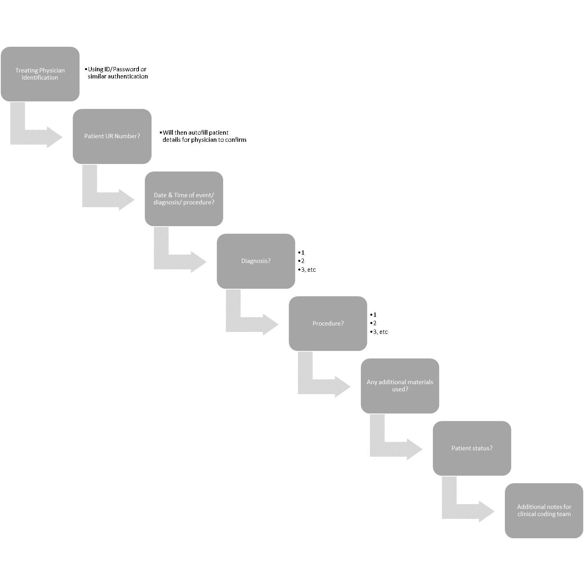

Public hospitals in Queensland and most other Australian states receive funding from Medicare and other government bodies on a per-patient-per-procedure basis (QLD Health 2018). For funding to be allocated correctly to each hospital, the procedures undertaken on a per-patient basis must be recorded and remitted to Medicare or the relevant funding body in a timely fashion. The current procedure for recording and remitting this information, called clinical coding, is extremely manual and time-consuming. This task involves an administrative worker reviewing patient charts and practitioner/nurse notes to determine what the medical condition was, which procedures were performed, and what materials were used in the process. Each condition and procedure is then assigned a code based on the Australian clinical coding standard ICD-10-AM (IHPA 2019); for example, P59.9 Jaundice in newborn. At times the condition can be up to interpretation, due to complexity or inability to decipher clinician handwriting.
Where small hospitals may be able to keep up with procedures using this manual method, large hospitals require a clinical coding team to process the many procedures performed daily. This project proposes an automated system for clinical coding, whereby clinicians enter procedure details directly into a patient’s electronic chart (where in practice by the hospital) or into a stand-alone application, either of which will automatically code said procedure and produce a summary of codes ready for remittal to Medicare. This system will reduce time spent reviewing patient charts and prevent miscoding due to a clinical coders’ inability to interpret the procedure from practitioner notes, as clinicians will be required to directly enter this information.
The Project
This app will be lightweight with a minimalistic User Interface (UI) to allow fast identification of data required, and practitioners will be queried for data in a stepwise fashion:
The practitioner will be required to submit the data, after which point data entry will close and the system will return to the initial ‘treating physician identification’ query. The app will organise this data per field, initially identifying the patient from hospital records and assigning patient details, practitioner name, and date/time to a temporary working file on the device. Key words and phrases from the diagnosis, procedure and additional materials fields will then be compared to a built-in table of ICD-10-AM codes. Where matching codes are found, these will be added to the working file. The file will be summarised with the patient status. Additional notes will be transcribed directly to the end of the file, alongside a direct copy of the practitioner notes for the diagnosis, procedure and materials fields, which will be included for verification and audit purposes, with any unresolved words or phrases highlighted for review by the clinical coding team.
A possible example of the data generated is included below: